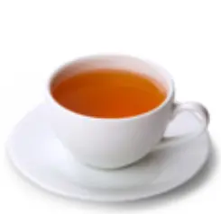
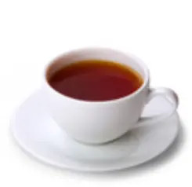
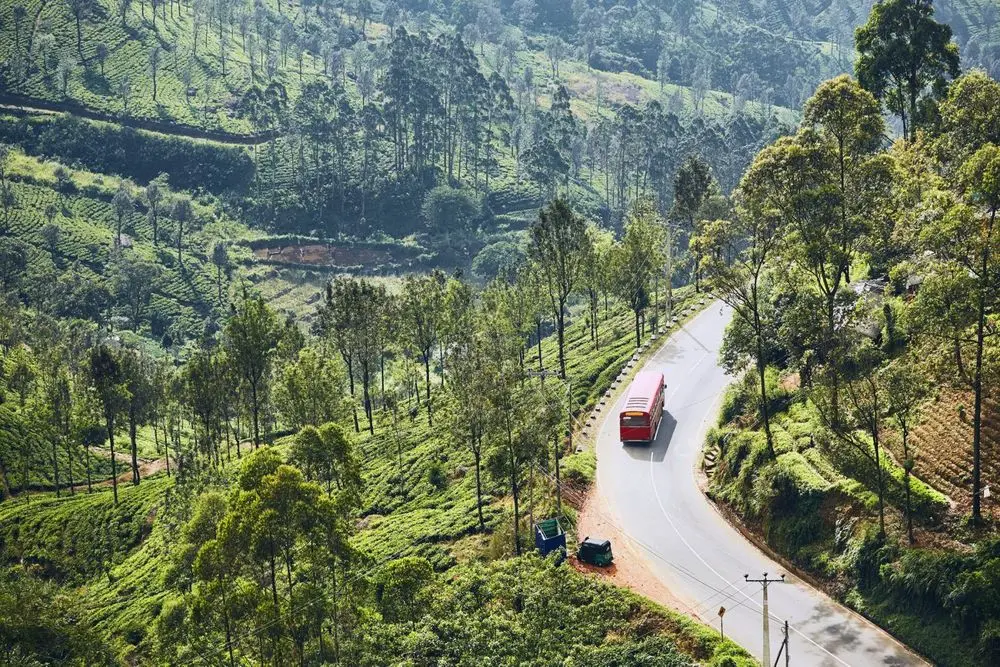

Introduction to Ceylon Tea
Introduced in 1867, Ceylon Tea has grown to be the top agriculture export in Sri Lanka and provides direct and indirect employment to nearly 1 million people while around 4% of the country’s land area is covered in tea plantations amounting to nearly 203000 hectares. Sri Lanka is an island made for tea. The country produces tea throughout the year and the total tea production is about 340 million kilograms per annum. Sri Lanka’s tea-growing areas are mainly concentrated in the central highlands and southern inland areas of the island.
Sri Lanka Tea Board
The Sri Lanka Tea Board was established on 1st January 1976 with the corporate objective of develop, regulate & promote Tea Industry in Sri Lanka. As the regulatory body, Sri Lanka Tea Board is responsible for regulating the activities of tea industry, production, increase of cultivation, replanting, rehabilitating old gardens, establishment of factories and monitoring their operations. The whole process has been monitored and evaluated from factory to the shipment to maintain the “Quality of Ceylon tea” and many actions have been initiated to intensifying the monitoring of quality standards of tea at the point of sale, pre-shipment, warehouses of brokers, blenders and exporters and providing advisory services on hygienic blending and storing.
.webp)
Under development functions, SLTB facilitates the subsidies for upgrading factories and replantation of Tea, awareness programs on minimizing post-harvest damage and productivity enhancement and Certification of quality of tea through sensory and chemical analysis. Promotional activities are covered the marketing and promotion of Ceylon tea in globally, collection and interpretation of tea statistics and delivering competency of the actual markets and ability to retain and expand Ceylon tea among leading markets.
Tea Growing regions
- Nuwara Eliya
- Dimbula
- Uva
- Uda Pussellawa
- Kandy
- Ruhuna
- Sabaragamuwa
Nuwara Eliya, the best-known of Sri Lanka’s tea-growing districts, is the most mountainous, and has the highest average elevation. Combined with low temperature, this produces teas of exquisite bouquet. The infusion in the cup is the lightest (palest) of all the types of Ceylon Tea, with a golden hue and a delicately fragrant flavor. The whole-leaf Orange Pekoe (OP) and Broken Orange Pekoe (BOP) are the most sought after tea grades from the region.
Between Nuwara Eliya and Horton Plains lies the district of Dimbula, whose teas are defined as “high grown” as all estates exceed an altitude of 1,250m (4000 Feet). The complex topography of the region produces a variety of microclimates, which produce differences in flavor – sometimes jasmine mixed with cypress. All, however, share the Dimbula character: a tea that produces a fine golden-orange hue in the cup, and which is refreshingly mellow.
The remote Uva district is exposed to the winds of both northeast and southwest monsoons, believed to endow the tea produced here with a special, unmistakable character and exotically aromatic flavor. It was with tea grown on his Uva estates that Thomas Lipton, the Victorian magnate, persuaded Americans to drink tea. The mellow, smooth taste of Uva tea, once experienced, is easily distinguished.
The Uda Pussellawa district is situated close to Nuwara Eliya, so its tea is often compared to that of its neighbor. But it is darker in the cup, with a pinkish hue, of greater strength, and exquisitely tangy. Colder conditions at year end supposedly add a hint of rose to the bouquet of a tea known for its medium body and subtle character. Heavy rainfall, though, tends to produce tea that is even darker and stronger-flavored.
In the Kandy district, where the industry began in 1867, the teas produced are described as “mid-grown” as cultivation does not exceed 1,300 m. They range in flavor depending on the altitude and whether the plantation is sheltered from monsoon winds. All are particularly flavorsome. Kandy teas produce a bright infusion with a coppery tone, and are strong and intensely full-bodied.
The teas of the Ruhuna district are defined as “low-grown” as they are cultivated at an altitude not exceeding 600m comprising vast sub regions from coastal plains to Southern edge of Sinharaja Rain Forest. The soil, combined with the low elevation of the estates, causes the tea-bush to grow rapidly, producing a long, beautiful leaf. Full-flavored black tea is a distinctively unique Ruhuna specialty. Ruhuna factories produce a wide variety of leaf styles and sizes, including prized “tips”.
Sabaragamuwa is Sri Lanka’s biggest district, the teas of which are low-grown as its estates range in elevation from sea level to 610m. Sabaragamuwa, sandwiched between Sinharaja in the south and Adam's Peak wilderness in the north, produces a fast-growing bush with a long leaf. The liquor, too, is similar to that of Ruhuna teas, dark yellow-brown with a reddish tint. The aroma, however, is noticeably different from the Ruhuna products, with a hint of sweet caramel, not quite as strong: yet exceptionally stylish.
Tea Tourism
Ceylon Tea and Tourism are amongst the top five foreign income earners in Sri Lanka and their synergy is poised to create refreshing unique experience. Therefore, Ceylon Tea & Tourism are making a perfect partnership. With a rich heritage and a cultural mix distinctive to Sri Lankan tea production and breathtaking views at every turn, Ceylon tea gardens are a great tourist destination.
Sri Lanka is the planet's fourth largest tea producer and ‘tea tourism’ is an increasingly popular activity. So if you’re keen to travel for your tea, here’s our pick of Sri Lanka’s best tea experiences.
- Have tea at the Grand
- Sleep like a tea planter
- Take tea in the T-lounge, Colombo
- Take a tea estate tour
- Kip in a tea factory
- See a seaside tea estate
- Take tea the Sri Lankan way